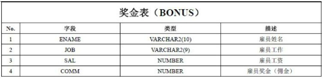
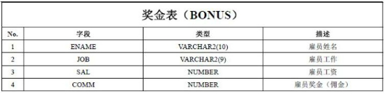
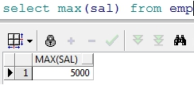
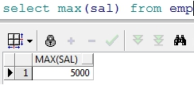

Oracle第一天第 1 章 一、 oracle介绍[了解]二、 Oracle安装[了解]三、 Oracle体系结构[理解]四、 创建表空间[理解]五、 用户[理解]六、 Oracle数据类型[应用]七、 表的管理[应用]1.1 建表2.1 表删除3.1 表的修改4.1 数据库表数据的更新5.1 序列八、 Scott用户下的表结构[了解]九、 单行函数[应用]1. 字符函数2. 数值函数十、 多行函数（聚合函数）十一、 分组统计十二、 多表查询[应用]十三、 子查询[应用]十四、 Rownum与分页查询[应用]第二天第一章一.视图[应用]二.索引[应用]三.pl/sql 基本语法[了解]四.存储过程[理解]五.存储函数[理解]六.触发器[理解]七．Java程序调用存储过程[应用]
Oracle
第一天
第 1 章
一、 oracle介绍[了解]
xxxxxxxxxxORACLE数据库系统是美国ORACLE公司（甲骨文）提供的以分布式数据库为核心的一组软件产品，是目前最流行的客户/服务器(CLIENT/SERVER)或B/S体系结构的数据库之一。比如SilverStream就是基于数据库的一种中间件。ORACLE数据库是目前世界上使用最为广泛的数据库管理系统，作为一个通用的数据库系统，它具有完整的数据管理功能；作为一个关系数据库，它是一个完备关系的产品；作为分布式数据库它实现了分布式处理功能。但它的所有知识，只要在一种机型上学习了ORACLE知识，便能在各种类型的机器上使用它。
二、 Oracle安装[了解]
xxxxxxxxxx课上已准备好了一个安装全套Oracle软件的XP虚拟机，我们直接在虚拟机中学习，如果自己想把软件安装到自己电脑请参考文档《Oracle安装.docx》
三、 Oracle体系结构[理解]
- 数据库 Oracle数据库是数据的物理存储。这就包括（数据文件ORA或者DBF、控制文件、联机日志、参数文件）。其实Oracle数据库的概念和其它数据库不一样，这里的数据库是一个操作系统只有一个库。可以看作是Oracle就只有一个大数据库。
- 实例 一个Oracle实例（Oracle Instance）有一系列的后台进程（Backguound Processes)和内存结构（Memory Structures)组成。一个数据库可以有n个实例。
- 用户 用户是在实例下建立的。不同实例可以建相同名字的用户。
- 表空间 表空间是Oracle对物理数据库上相关数据文件（ORA或者DBF文件）的逻辑映射。一个数据库在逻辑上被划分成一到若干个表空间，每个表空间包含了在逻辑上相关联的一组结构。每个数据库至少有一个表空间(称之为system表空间)。 每个表空间由同一磁盘上的一个或多个文件组成，这些文件叫数据文件(datafile)。一个数据文件只能属于一个表空间。
- 数据文件（dbf、ora）
数据文件是数据库的物理存储单位。数据库的数据是存储在表空间中的，真正是在某一个或者多个数据文件中。而一个表空间可以由一个或多个数据文件组成，一个数据文件只能属于一个表空间。一旦数据文件被加入到某个表空间后，就不能删除这个文件，如果要删除某个数据文件，只能删除其所属于的表空间才行。
注： 表的数据，是有用户放入某一个表空间的，而这个表空间会随机把这些表数据放到一个或者多个数据文件中。
由于oracle的数据库不是普通的概念，oracle是有用户和表空间对数据进行管理和存放的。
但是表不是有表空间去查询的，而是由用户去查的。因为不同用户可以在同一个表空间建立同一个名字的表！这里区分就是用户了！

四、 创建表空间[理解]
xxxxxxxxxx表空间？ ORACLE数据库的逻辑单元。 数据库---表空间 一个表空间可以与多个数据文件（物理结构）关联一个数据库下可以建立多个表空间，一个表空间可以建立多个用户、一个用户下可以建立多个表。
xxxxxxxxxxcreate tablespace itcastdatafile 'c:\itcast.dbf'size 100 mautoextend onnext 10 mxxxxxxxxxxitcast 为表空间名称datafile 指定表空间对应的数据文件size 后定义的是表空间的初始大小autoextend on 自动增长 ，当表空间存储都占满时，自动增长next 后指定的是一次自动增长的大小。
五、 用户[理解]
- 创建用户
xxxxxxxxxxcreate user itcastuseridentified by itcastdefault tablespace itcastidentified by 后边是用户的密码default tablespace 后边是表空间名称oracle数据库与其它数据库产品的区别在于，表和其它的数据库对象都是存储在用户下的。- 用户赋权限 新创建的用户没有任何权限，登陆后会提示 Oracle中已存在三个重要的角色：connect角色，resource角色，dba角色。 CONNECT角色： --是授予最终用户的典型权利，最基本的 ALTER SESSION --修改会话 CREATE CLUSTER --建立聚簇 CREATE DATABASE LINK --建立数据库链接 CREATE SEQUENCE --建立序列 CREATE SESSION --建立会话 CREATE SYNONYM --建立同义词 CREATE VIEW --建立视图 RESOURCE角色： --是授予开发人员的 CREATE CLUSTER --建立聚簇 CREATE PROCEDURE --建立过程 CREATE SEQUENCE --建立序列 CREATE TABLE --建表 CREATE TRIGGER --建立触发器 CREATE TYPE --建立类型 DBA角色：拥有全部特权，是系统最高权限，只有DBA才可以创建数据库结构，并且系统权限也需要DBA授出，且DBA用户可以操作全体用户的任意基表，包括删除 grant dba to itcastuser 进入system用户下给用户赋予dba权限，否则无法正常登陆
六、 Oracle数据类型[应用]
xxxxxxxxxx|No |数据类型| 描述||----|----|----||1 |Varchar， varchar2| 表示一个字符串||2 |NUMBER |NUMBER(n)表示一个整数，长度是n<br> NUMBER(m,n):表示一个小数，总长度是m，<br>小数是n，整数是m-n||3 |DATA |表示日期类型||4 |CLOB |大对象，表示大文本数据类型，可存4G||5 |BLOB |大对象，表示二进制数据，可存4G|
七、 表的管理[应用]
1.1 建表
语法： Create table 表名（ 字段 1 数据类型 [default 默认值], 字段 2 数据类型 [default 默认值], ... 字段n 数据类型 [default 默认值] ）;
范例：创建person表 create table person( pid number( 10 ), name varchar2( 10 ), gender number( 1 ) default 1 , birthday date );
insert into person(pid, name, gender, birthday) values( 1 , '张三', 1 , to_date('1999-12-22', 'yyyy-MM-dd'));
2.1 表删除
语法：DROP TABLE 表名
3.1 表的修改
在sql中使用alter可以修改表
- 添加语法：ALTER TABLE 表名称 ADD(列名 1 类型 [DEFAULT 默认值]，列名 1 类型 [DEFAULT 默认值]...)
- 修改语法：ALTER TABLE 表名称 MODIFY(列名 1 类型 [DEFAULT 默认值]，列名 1 类型 [DEFAULT 默认值]...)
- 修改列名: ALTER TABLE 表名称 RENAME 列名1 TO 列名 2 范例：在person表中增加列address alter table person add(address varchar2( 10 )); 范例：把person表的address列的长度修改成 20 长度 alter table person modify(address varchar2( 20 ));
4.1 数据库表数据的更新
- INSERT（增加） 标准写法： INSERT INTO表名[(列名 1 ，列名 2 ，...)]VALUES(值 1 ，值 2 ，...) 简单写法（不建议） INSERT INTO 表名VALUES(值 1 ，值 2 ，...) 注意：使用简单的写法必须按照表中的字段的顺序来插入值，而且如果有为空的字段使用null insert into person values(2,'李四',1,null,'北京育新');
- UPDATE（修改） 全部修改：UPDATE 表名 SET 列名1=值 1 ，列名2=值 2 ，.... 局部修改：UPDATE 表名 SET 列名1=值 1 ，列名2=值 2 ，....WHERE 修改条件； 全部更新 局部更新
- DELETE（删除） 语法 : DELETE FROM 表名 WHERE 删除条件; 在删除语句中如果不指定删除条件的话就会删除所有的数据 因为oracle的事务对数据库的变更的处理，我们必须做提交事务才能让数据真正的插入到数据库中，在同样在执行完数据库变更的操作后还可以把事务进行回滚，这样就不会插入到数据库。如果事务提交后则不可以再回滚。 提交：commit 回滚：rollback
5.1 序列
xxxxxxxxxx在很多数据库中都存在一个自动增长的列,如果现在要想在 oracle 中完成自动增长的功能,则只能依靠序列完成,所有的自动增长操作,需要用户手工完成处理。
语法：CREATE SEQUENCE 序列名 [INCREMENT BY n] [START WITH n] [{MAXVALUE/ MINVALUE n|NOMAXVALUE}] [{CYCLE|NOCYCLE}] [{CACHE n|NOCACHE}]; 范例:创建一个seqpersonid的序列,验证自动增长的操作 CREATE SEQUENCE seqpersonid; 序列创建完成之后,所有的自动增长应该由用户自己处理,所以在序列中提供了以下的两种操作： nextval :取得序列的下一个内容 currval :取得序列的当前内容 select seqpersonid.nextval from dual; select seqpersonid.currval from dual; 在插入数据时需要自增的主键中可以这样使用 在实际项目中每一张表会配一个序列，但是表和序列是没有必然的联系的，一个序列被哪一张表使用都可以，但是我们一般都是一张表用一个序列。 序列的管理一般使用工具来管理。
八、 Scott用户下的表结构[了解]


 

九、 单行函数[应用]
1. 字符函数
xxxxxxxxxx接收字符输入返回字符或者数值，dual是伪表1. 把小写的字符转换成大小的字符upper('smith')2. 把大写字符变成小写字符lower('SMITH')3. 作业根据API学习：首字母大写函数、字符串链接函数、字符串截取函数、字符串替换函数、获取字符串长度函数等。
2. 数值函数
xxxxxxxxxx1. 四舍五入函数：ROUND()默认情况下ROUND四舍五入取整，可以自己指定保留的位数。
2. 作业 根据API学习：数值截取函数、取余函数等 1.1.1 3.日期函数 Oracle中提供了很多和日期相关的函数，包括日期的加减，在日期加减时有一些规律 日期 – 数字 = 日期 日期 + 数字 = 日期 日期 – 日期 = 数字
- 范例：查询雇员的进入公司的周数。 分析：查询雇员进入公司的天数(sysdate – 入职日期)/7就是周数
- 获得两个时间段中的月数：MONTHS_BETWEEN() 范例：查询所有雇员进入公司的月数 1.1.2 4.转换函数
- TO_CHAR:字符串转换函数
范例：查询所有的雇员将将年月日分开，此时可以使用TO_CHAR函数来拆分拆分时需要使用通配符
年：y, 年是四位使用yyyy
月：m, 月是两位使用mm
日：d, 日是两位使用dd
 在结果中 10 以下的月前面被被补了前导零，可以使用fm去掉前导零
在结果中 10 以下的月前面被被补了前导零，可以使用fm去掉前导零
- TO_DATE:日期转换函数 TO_DATE可以把字符串的数据转换成日期类型 1.1.3 5.通用函数 1 ．空值处理nvl 范例：查询所有的雇员的年薪 我们发现很多员工的年薪是空的，原因是很多员工的奖金是null，null和任何数值计算都是null，这时我们可以使用nvl来处理。 2.Decode函数 该函数类似if....else if...esle 语法：DECODE(col/expression, [search1,result1],[search2, result2]....[default]) Col/expression:列名或表达式 Search1，search2...:用于比较的条件 Result1, result2...:返回值 如果col/expression和Searchi匹配就返回resulti,否则返回default的默认值 范例：查询出所有雇员的职位的中文名 3.case when CASE expr WHEN comparison_expr1 THEN return_expr [WHEN comparison_expr2 THEN return_expr WHEN comparison_exprn THEN return_exprn ELSE else_expr] END select t.empno, t.ename, case when t.job = 'CLERK' then '业务员' when t.job = 'MANAGER' then '经理' when t.job = 'ANALYST' then '分析员' when t.job = 'PRESIDENT' then '总裁' when t.job = 'SALESMAN' then '销售' else '无业' end from emp t
十、 多行函数（聚合函数）
1.1.3.1 1.统计记录数count()
范例：查询出所有员工的记录数
 不建议使用count(*)，可以使用一个具体的列以免影响性能。
1.1.3.2 2.最小值查询min()
范例：查询出来员工最低工资
1.1.3.3 3.最大值查询max()
范例：查询出员工的最高工资

1.1.3.4 4.查询平均值avg()
范例：查询出员工的平均工资
1.1.3.5 5.求和函数sum()
范例：查询出 20 号部门的员工的工资总和
不建议使用count(*)，可以使用一个具体的列以免影响性能。
1.1.3.2 2.最小值查询min()
范例：查询出来员工最低工资
1.1.3.3 3.最大值查询max()
范例：查询出员工的最高工资

1.1.3.4 4.查询平均值avg()
范例：查询出员工的平均工资
1.1.3.5 5.求和函数sum()
范例：查询出 20 号部门的员工的工资总和
十一、 分组统计
xxxxxxxxxx分组统计需要使用GROUP BY来分组语法：语法：SELECT * |列名 FROM 表名 {WEHRE 查询条件} {GROUP BY 分组字段} ORDER BY 列名1 ASC|DESC，列名2...ASC|DESC范例：查询每个部门的人数
范例：查询出每个部门的平均工资
如果我们想查询出来部门编号，和部门下的人数
我们发现报了一个ORA- 00937 的错误
注意：
1. 如果使用分组函数，SQL只可以把GOURP BY分组条件字段和分组函数查询出来，不能有其
他字段。
2. 如果使用分组函数，不使用GROUP BY 只可以查询出来分组函数的值
范例：按部门分组，查询出部门名称和部门的员工数量
范例：查询出部门人数大于 5 人的部门
分析：需要给count(ename)加条件，此时在本查询中不能使用where，可以使用HAVING
范例：查询出部门平均工资大于 2000 的部门

十二、 多表查询[应用]
1.1.4 1.多表连接基本查询
使用一张以上的表做查询就是多表查询
语法： SELECT {DISTINCT} *|列名.. FROM 表名 别名，表名 1 别名
{WHERE 限制条件 ORDER BY 排序字段 ASC|DESC...}
范例：查询员工表和部门表
我们发现产生的记录数是 56 条，我们还会发现emp表是 14 条，dept表是 4 条， 56 正是emp表和dept表的记录数的乘积，我们称其为笛卡尔积。
如果多张表进行一起查询而且每张表的数据很大的话笛卡尔积就会变得非常大，对性能造成影响，想要去掉笛卡尔积我们需要关联查询。
在两张表中我们发现有一个共同的字段是depno，depno就是两张表的关联的字段，我们可以使用这个字段来做限制条件，两张表的关联查询字段一般是其中一张表的主键，另一张表的外键。
关联之后我们发现数据条数是 14 条，不在是 56 条。
多表查询我们可以为每一张表起一个别名
范例：查询出雇员的编号，姓名，部门的编号和名称，地址
 范例：查询出每个员工的上级领导
分析：emp表中的mgr字段是当前雇员的上级领导的编号，所以该字段对emp表产生了自身关联，可以使用mgr字段和empno来关联
范例：查询出每个员工的上级领导
分析：emp表中的mgr字段是当前雇员的上级领导的编号，所以该字段对emp表产生了自身关联，可以使用mgr字段和empno来关联
 范例:在上一个例子的基础上查询该员工的部门名称
分析：只要在上一个例子基础上再加一张表的关联，使用deptno来做关联字段即可
范例：查询出每个员工编号，姓名，部门名称，工资等级和他的上级领导的姓名，工资等级
select e.empno,
e.ename,
decode(s.grade,
1 ,'一级',
2 ,'二级',
3 ,'三级',
4 ,'四级',
5 ,'五级') grade,
d.dname,
e1.empno,
e1.ename,
decode(s1.grade,
1 ,'一级',
2 ,'二级',
3 ,'三级',
4 ,'四级',
5 ,'五级') grade
from emp e, emp e1, dept d, salgrade s, salgrade s1
where e.mgr = e1.empno
and e.deptno = d.deptno
and e.sal between s.losal and s.hisal
and e1.sal between s1.losal and s1.hisal
1.1.5 2.外连接（左右连接）
范例:在上一个例子的基础上查询该员工的部门名称
分析：只要在上一个例子基础上再加一张表的关联，使用deptno来做关联字段即可
范例：查询出每个员工编号，姓名，部门名称，工资等级和他的上级领导的姓名，工资等级
select e.empno,
e.ename,
decode(s.grade,
1 ,'一级',
2 ,'二级',
3 ,'三级',
4 ,'四级',
5 ,'五级') grade,
d.dname,
e1.empno,
e1.ename,
decode(s1.grade,
1 ,'一级',
2 ,'二级',
3 ,'三级',
4 ,'四级',
5 ,'五级') grade
from emp e, emp e1, dept d, salgrade s, salgrade s1
where e.mgr = e1.empno
and e.deptno = d.deptno
and e.sal between s.losal and s.hisal
and e1.sal between s1.losal and s1.hisal
1.1.5 2.外连接（左右连接）
- 右连接 当我们在做基本连接查询的时候，查询出所有的部门下的员工，我们发现编号为 40 的部门下没有员工，但是要求把该部门也展示出来，我们发现上面的基本查询是办不到的 使用(+)表示左连接或者右连接，当(+)在左边表的关联条件字段上时是左连接，如果是在右边表的关联条件字段上就是右连接。 范例：查询出所有员工的上级领导 分析：我们发现使用我们以前的做法发现KING的上级领导没有被展示，我们需要使用左右连接把他查询出来
十三、 子查询[应用]
xxxxxxxxxx子查询：在一个查询的内部还包括另一个查询，则此查询称为子查询。Sql的任何位置都可以加入子查询。范例：查询比 7654 工资高的雇员分析：查询出 7654 员工的工资是多少，把它作为条件
子查询在操作中有三类： 单列子查询：返回的结果是一列的一个内容 单行子查询：返回多个列，有可能是一个完整的记录 多行子查询：返回多条记录 范例：查询出比雇员 7654 的工资高，同时从事和 7788 的工作一样的员工 范例：要求查询每个部门的最低工资和最低工资的雇员和部门名称 在返回多条记录的子查询可以把它的结果集当做一张表，给起个别名， 如图中的a。
十四、 Rownum与分页查询[应用]
ROWNUM:表示行号，实际上此是一个列,但是这个列是一个伪列,此列可以在每张表中出现。 范例：查询emp表带有rownum列 select rownum, t.* from emp t 我们可以根据rownum来取结果集的前几行，比如前 5 行 但是我们不能取到中间几行，因为rownum不支持大于号，只支持小于号，如果想实现我们的需求怎么办呢？答案是使用子查询，也正是oracle分页的做法。 第一种写法： select * from (select rownum rm, a.* from (select * from emp) a where rownum < 11 ) b where b.rm > 5 第二种写法： select * from (select rownum r , emp. * from emp ) b where b.r > 5 and b.r < 11
第二天
第一章
一.视图[应用]
视图就是封装了一条复杂查询的语句。 语法1.：CREATE VIEW 视图名称 AS 子查询 范例：建立一个视图，此视图包括了 20 部门的全部员工信息 create view empvd20 as select * from emp t where t.deptno = 20 视图创建完毕就可以使用视图来查询，查询出来的都是 20 部门的员工 语法 2 ：CREATE OR REPLACE VIEW 视图名称 AS 子查询 如果视图已经存在我们可以使用语法 2 来创建视图，这样已有的视图会被覆盖。 create or replace view empvd20 as select * from emp t where t.deptno = 20 那么视图可以修改吗？ 我们尝试着修改视图但是发现是视图所查询的表的字段值被修改了。所以我们一般不会去修改视图。 我们可以设置视图为只读。 语法 3 ：CREATE OR REPLACE VIEW 视图名称 AS 子查询 WITH READ ONLY create or replace view empvd20 as select * from emp t where t.deptno = 20 with read only
二.索引[应用]
索引是用于加速数据存取的数据对象。合理的使用索引可以大大降低i/o次数,从而提高数据访问性能。索引有很多种我们主要介绍常用的几种: 为什么添加了索引之后，会加快查询速度呢？ 图书馆：如果杂乱地放书的话检索起来就非常困难,所以将书分类，然后再建一个箱子，箱子里面放卡片，卡片里面可以按类查询,按书名查或者类别查,这样的话速度会快很多很多，这个就有点像索引。索引的好处就是提高你找到书的速度，但是正是因为你建了索引，就应该有人专门来维护索引，维护索引是要有时间精力的开销的，也就是说索引是不能乱建的，所以建索引有个原则：如果有一个字段如果不经常查询，就不要去建索引。现在把书变成我们的表，把卡片变成我们的索引，就知道为什么索引会快，为什么会有开销。 创建索引的语法： 创建索引： 1 ． 单列索引 单列索引是基于单个列所建立的索引，比如: CREATE index 索引名 on 表名(列名) 2 ． 复合索引 复合索引是基于两个列或多个列的索引。在同一张表上可以有多个索引，但是要求列的组合必须不同,比如： Create index emp_idx1 on emp(ename,job); Create index emp_idx1 on emp(job,ename);
xxxxxxxxxx范例：给person表的name建立索引create index pname_index on person(name);范例：给person表创建一个name和gender的索引create index pname_gender_index on person(name, gender);
索引的使用原则： 在大表上建立索引才有意义 在where子句后面或者是连接条件上的字段建立索引 表中数据修改频率高时不建议建立索引
三.pl/sql 基本语法[了解]
什么是PL/SQL? PL/SQL（Procedure Language/SQL） PLSQL是Oracle对sql语言的过程化扩展，指在SQL命令语言中增加了过程处理语句（如分支、循环等），使SQL语言具有过程处理能力。把SQL语言的数据操纵能力与过程语言的数据处理能力结合起来，使得PLSQL面向过程但比过程语言简单、高效、灵活和实用。 范例 1 ：为职工涨工资，每人涨 10 ％的工资。 update emp set sal=sal*1. 范例 2 ：例2: 按职工的职称长工资,总裁涨 1000 元,经理涨 800 元，其他人员涨 400 元。 这样的需求我们就无法使用一条SQL来实现，需要借助其他程序来帮助完成，也可以使用pl/sql。
1.1.1 1.pl/sql程序语法 程序语法： declare 说明部分 （变量说明，游标申明，例外说明 〕 begin 语句序列 （DML语句〕... exception 例外处理语句 End; 1.1.2 2.常量和变量定义 在程序的声明阶段可以来定义常量和变量。 变量的基本类型就是 oracle 中的建表时字段的变量如 char, varchar2, date, number, boolean, long 定义语法：varl char(15); Psal number(9,2); 说明变量名、数据类型和长度后用分号结束说明语句。 常量定义：married constant boolean:=true 引用变量 Myname emp.ename%type; 引用型变量，即my_name的类型与emp表中ename列的类型一样 在sql中使用into来赋值 declare emprec emp.ename%type; begin select t.ename into emprec from emp t where t.empno = 7369 ; dbms_output.put_line(emprec); end; 记录型变量 Emprec emp%rowtype 记录变量分量的引用 emp_rec.ename:='ADAMS'; declare p emp%rowtype; begin select * into p from emp t where t.empno = 7369 ; dbms_output.put_line(p.ename || ' ' || p.sal); end; 1.1.3 3. if分支 语法 1 ： IF 条件 THEN 语句1; 语句2; END IF; 语法 2 ： IF 条件 THEN 语句序列 1 ； ELSE 语句序列 2 ； END IF； 语法 3 ： IF 条件 THEN 语句; ELSIF 语句 THEN 语句; ELSE 语句; END IF; 范例 1 ：如果从控制台输入 1 则输出我是 1 declare pnum number := # begin if pnum = 1 then dbms_output.put_line('我是1'); end if; end; 范例 2 ：如果从控制台输入 1 则输出我是 1 否则输出我不是 1 declare mynum number := # begin if mynum = 1 then dbms_output.put_line('我是1'); else dbms_output.put_line('我不是1'); end if; end; 范例3:判断人的不同年龄段 18 岁以下是未成年人， 18 岁以上 40 以下是成年人， 40 以上是老年人 declare mynum number := # begin if mynum < 18 then dbms_output.put_line('未成年人'); elsif mynum >= 18 and mynum < 40 then dbms_output.put_line('中年人'); elsif mynum >= 40 then dbms_output.put_line('老年人'); end if; end; 1.1.4 4.LOOP循环语句 语法 1 ： WHILE total <= 25000 LOOP ... total : = total + salary; END LOOP; 语法 2 ： Loop EXIT [when 条件]; ...... End loop 语法 3 ： FOR I IN 1.. 3 LOOP 语句序列 ; END LOOP ; 范例:使用语法 1 输出 1 到 10 的数字 declare step number := 1 ; begin while step <= 10 loop dbms_output.put_line(step); step := step + 1 ; end loop; end; 范例:使用语法 2 输出 1 到 10 的数字 declare step number := 1 ; begin loop exit when step > 10 ; dbms_output.put_line(step); step := step + 1 ; end loop; end; 范例:使用语法 3 输出 1 到 10 的数字 declare step number := 1 ; begin for step in 1 .. 10 loop dbms_output.put_line(step); end loop; end; 1.1.5 5.游标Cursor 在写java程序中有集合的概念，那么在pl/sql中也会用到多条记录，这时候我们就要用到游标，游标可以存储查询返回的多条数据。 语法： CURSOR 游标名 [ (参数名 数据类型,参数名 数据类型,...)] IS SELECT 语句; 例如：cursor c1 is select ename from emp; 游标的使用步骤： 打开游标： open c1; (打开游标执行查询) 取一行游标的值：fetch c1 into pjob; (取一行到变量中) 关闭游标： close c1;(关闭游标释放资源) 游标的结束方式 exit when c1%notfound 注意： 上面的pjob必须与emp表中的job列类型一致： 定义：pjob emp.empjob%type; 范例 1 ：使用游标方式输出emp表中的员工编号和姓名 declare cursor pc is select * from emp; pemp emp%rowtype; begin open pc; loop fetch pc into pemp; exit when pc%notfound; dbms_output.put_line(pemp.empno || ' ' || pemp.ename); end loop; close pc; end; 范例 2 ：按员工的工种涨工资,总裁 1000 元，经理涨 800 元其，他人员涨 400 元。 备份出一张新表为myemp;create table myemp as select * from emp; declare cursor pc is select * from myemp; addsal myemp.sal%type; pemp myemp%rowtype; begin open pc; loop fetch pc into pemp; exit when pc%notfound; if pemp.job = 'PRESIDENT' then addsal := 1000 ; elsif pemp.job = 'MANAGER' then addsal := 800 ; else addsal := 400 ; end if; update myemp t set t.sal = t.sal + addsal where t.empno = pemp.empno; end loop; close pc; end; 范例 3 ：写一段PL/SQL程序，为部门号为 10 的员工涨工资。 declare cursor pc(dno myemp.deptno%type) is select empno from myemp where deptno = dno; pno myemp.empno%type; begin open pc( 20 ); loop fetch pc into pno; exit when pc%notfound; update myemp t set t.sal = t.sal + 1000 where t.empno = pno; end loop; close pc; end;
四.存储过程[理解]
存储过程（Stored Procedure）是在大型数据库系统中，一组为了完成特定功能的SQL 语句集，经编译后存储在数据库中，用户通过指定存储过程的名字并给出参数（如果该存储过程带有参数）来执行它。存储过程是数据库中的一个重要对象，任何一个设计良好的数据库应用程序都应该用到存储过程。
创建存储过程语法： create [or replace] PROCEDURE 过程名[(参数名 in/out 数据类型)] AS begin PLSQL子程序体； End; 或者 create [or replace] PROCEDURE 过程名[(参数名 in/out 数据类型)] is begin PLSQL子程序体； End 过程名; 范例：创建一个输出helloword的存储过程 create or replace procedure helloworld is begin dbms_output.put_line('helloworld'); end helloworld; 调用存储过程 在plsql中调用存储过程 begin -- Call the procedure helloworld; end; 范例 2 ：给指定的员工涨 100 工资，并打印出涨前和涨后的工资 分析：我们需要使用带有参数的存储过程 create or replace procedure addSal1(eno in number) is pemp myemp%rowtype; begin select * into pemp from myemp where empno = eno; update myemp set sal = sal + 100 where empno = eno; dbms_output.put_line('涨工资前' || pemp.sal || '涨工资后' || (pemp.sal + 100 )); end addSal1; 调用 begin -- Call the procedure addsal1(eno => 7902 ); commit; end;
五.存储函数[理解]
xxxxxxxxxxcreate or replace function 函数名(Name in type, Name in type, ...) return 数据类型 is结果变量 数据类型;beginreturn(结果变量);end函数名;
存储过程和存储函数的区别 一般来讲，过程和函数的区别在于函数可以有一个返回值；而过程没有返回值。 但过程和函数都可以通过out指定一个或多个输出参数。我们可以利用out参数，在过程和函数中实现返回多个值。 范例：使用存储函数来查询指定员工的年薪 create or replace function empincome(eno in emp.empno%type) return number is psal emp.sal%type; pcomm emp.comm%type; begin select t.sal into psal from emp t where t.empno = eno; return psal * 12 + nvl(pcomm, 0 ); end; 使用存储过程来替换上面的例子 create or replace procedure empincomep(eno in emp.empno%type, income out number) is psal emp.sal%type; pcomm emp.comm%type; begin select t.sal, t.comm into psal, pcomm from emp t where t.empno = eno; income := psal* 12 +nvl(pcomm, 0 ); end empincomep; 调用： declare income number; begin empincomep( 7369 , income); dbms_output.put_line(income); end;
六.触发器[理解]
数据库触发器是一个与表相关联的、存储的 PL/SQL程序。 每当一个特定的数据操作语句(Insert,update,delete)在指定的表上发出时，Oracle自动地执行触发器中定义的语句序列。 触发器可用于 数据确认 实施复杂的安全性检查 做审计，跟踪表上所做的数据操作等 数据的备份和同步 触发器的类型 语句级触发器 ：在指定的操作语句操作之前或之后执行一次，不管这条语句影响了多少行 。 行级触发器（FOR EACH ROW） ：触发语句作用的每一条记录都被触发。在行级触发器中使用old和new伪记录变量, 识别值的状态。 语法： CREATE [or REPLACE] TRIGGER 触发器名 {BEFORE | AFTER} {DELETE | INSERT | UPDATE [OF 列名]} ON 表名 [FOR EACH ROW [WHEN(条件) ] ] begin PLSQL 块 End 触发器名 范例：插入员工后打印一句话“一个新员工插入成功” create or replace trigger testTrigger after insert on person declare -- local variables here begin dbms_output.put_line('一个员工被插入'); end testTrigger; 范例：不能在休息时间插入员工 create or replace trigger validInsertPerson before insert on person declare weekend varchar2( 10 ); begin select to_char(sysdate, 'day') into weekend from dual; if weekend in ('星期一') then raise_application_error(-20001, '不能在非法时间插入员工'); end if; end validInsertPerson; 当执行插入时会报错 在触发器中触发语句与伪记录变量的值
| 触发语句 | :old | :new |
|---|---|---|
| Insert | 所有字段都是空(null) | 将要插入的数据 |
| Update | 更新以前该行的值 | 更新后的值 |
| delete | 删除以前该行的值 | 所有字段都是空(null) |
范例：判断员工涨工资之后的工资的值一定要大于涨工资之前的工资 create or replace trigger addsal4p before update of sal on myemp for each row begin if :old.sal >= :new.sal then raise_application_error(- 20002 , '涨前的工资不能大于涨后的工资'); end if; end; 调用 update myemp t set t.sal = t.sal - 1 ;
七．Java程序调用存储过程[应用]
1.1.6 1.java连接oracle的jar包 可以在虚拟机中xp的oracle安装目录下找到jar包 :ojdbc14.jar 1.1.7 2.数据库连接字符串 String driver="oracle.jdbc.OracleDriver"; String url="jdbc:oracle:thin:@192.168.56.10:1521:orcl"; String username="scott"; String password="tiger"; 测试代码： 1.1.8 3.实现过程的调用 1.1.8.1 1.调用过程 1.1.8.1.1 1.过程定义 -- 统计年薪的过程 create or replace procedure proc_countyearsal ( eno in number, esal out number) as begin select sal * 12 +nvl( comm , 0 ) into esal from emp where empno = eno ; end; -- 调用 declare esal number; begin proc_countyearsal ( 7839 , esal ); dbms_output.put_line ( esal ); end; 1.1.8.1.2 2.过程调用
public void testProcedure01(){ String driver="oracle.jdbc.OracleDriver"; String url="jdbc:oracle:thin:@192.168.56.10:1521:orcl"; String username="scott"; String password="tiger"; try { Class. _forName_ (driver); Connection con = DriverManager. _getConnection_ (url, username, password); CallableStatement callSt = con.prepareCall("{call proc_countyearsal(?,?)}"); callSt.setInt(1, 7839); callSt.registerOutParameter(2, OracleTypes. _NUMBER_ ); callSt.execute(); System. _out_ .println(callSt.getObject(2)); } catch (Exception e) { e.printStackTrace(); }}